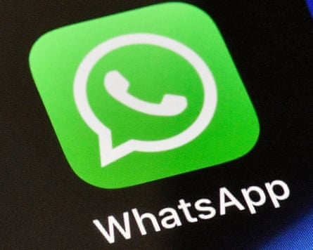

Hello, and welcome to TechScape. If you need me after this newsletter publishes, I will be busy poring over photos from Jeff Bezos and Lauren Sanchez’s wedding, the gaudiest and most star-studded affair to disrupt technology news this year. I found it a tacky and spectacular affair. Everyone who was anyone was there, except for Charlize Theron, who, unprompted, said on Monday : “I think we might be the only people who did not get an invite to the Bezos wedding. But that’s OK, because they suck and we’re cool.”
AI companies start winning the copyright fight
Last week, tech companies notched several victories in the fight over their use of copyrighted text to create artificial intelligence products.
Anthropic: A US judge has ruled that Anthropic, maker of the Claude chatbot, use of books to train its artificial intelligence system – without permission of the authors – did not breach copyright law. Judge William Alsup compared the Anthropic model’s use of books to a “reader aspiring to be a writer.”
And the next day, Meta: The US district judge Vince Chhabria , in San Francisco, said in his decision on the Meta case that the authors had not presented enough evidence that the technology company’s AI would cause “market dilution” by flooding the market with work similar to theirs.
The same day that Meta received its favorable ruling, a group of writers sued Microsoft , alleging copyright infringement in the creation of that company’s Megatron text generator. Judging by the rulings in favor of Meta and Anthropic, the authors are facing an uphill battle.
These three cases are skirmishes in the wider legal war over copyrighted media, which rages on. Three weeks ago, Disney and NBC Universal sued Midjourney, alleging that the company’s namesake AI image generator and forthcoming video generator made illegal use of the studios’ iconic characters like Darth Vader and the Simpson family. The world’s biggest record labels – Sony, Universal, and Warner – have sued two companies that make AI-powered music generators, Suno and Udio. On the textual front, the New York Times’ suit against OpenAI and Microsoft is ongoing.
The lawsuits over AI-generated text were filed first, and, as their rulings emerge, the next question in the copyright fight is whether decisions about one type of media will apply to the next.
“The specific media involved in the lawsuit – written works versus images versus videos versus audio – will certainly change the fair use analysis in each case,” said John Strand, a trademark and copyright attorney with the law firm Wolf Greenfield. “The impact on the market for the copyrighted works is becoming a key factor in the fair use analysis, and the market for books is different than that for movies.”
To Strand, the cases over images seem more favorable to copyright holders, as the AI models are allegedly producing identical images to the copyrighted ones in the training data.
A bizarre and damning fact was revealed in the Anthropic ruling, too: the company had pirated and stored some 7m books to create a training database for its AI. To remediate its wrongdoing, the company bought physical copies and scanned them, digitizing the text. Now the owner of 7 million physical books that no longer held any utility, Anthropic destroyed them. The company bought the books, diced them up, scanned the text, and threw them away, Ars Technica reports . There are less destructive ways to digitize books, but they are slower. The AI industry is here to move fast and break things.
Anthropic laying waste to millions of books presents a crude literalization of the ravenous consumption of content necessary for AI companies to create their products.
AI and the environment: bad news
- Google’s emissions up 51% as AI electricity demand derails efforts to go green
- Inside a plan to use AI to amplify doubts about the dangers of pollutants
An update on last week’s stories: Trump’s phone

Composite: The Guardian/Getty/Trump Mobile/Trump Watches/Ebay
Two stories I wrote about last week saw significant updates in the ensuing days.
The website for Trump’s gold phone, “T1”, has dropped its “Made in America” pledge in favor of “proudly American” and “brought to life in America”, per the Verge .
Trump seems to have followed the example of Apple, which skirts the issue of origin but still emphasizes the American-ness of iPhones by engraving them with “Designed in California.” What is unsaid: Assembled in China or India, and sourced from many other countries. It seems Trump and his family have opted for a similar evasive tagline, though it’s been thrown into much starker relief by their original promise.
The third descriptor that now appears on Trump’s phone site, “American-Proud Design”, seems most obviously cued by Apple.
The tagline “Made in the USA” carries legal weight. Companies have faced lawsuits over just how many of their products’ parts were produced in the US, and the US’ main trade regulator has established standards by which to judge the actions behind the slogan. It would be extremely difficult for a smartphone’s manufacturing history to measure up to those benchmarks, by the vast majority of expert estimations.
Though Trump intends to repatriate manufacturing in the US with his sweeping tariffs, he seems to be learning just what other phone companies already know. It is complicated and limiting to make a phone solely in the US, and doing so forces severe constraints on the final product.
Read last week’s newsletter about the gold Trump phone.
… and online age checks
Photograph: Matt Cardy/Getty Images
Last week, I wrote about Pornhub’s smutty return to France after a law requiring online age verification was suspended there. This week, the US supreme court ruled in favor of an age-check law passed in Texas. Pornhub has blocked access to anyone in Texas in protest for the better part of two years, as it did in France for three weeks. Clarence Thomas summed up the court’s reasoning:
“HB 1181 simply requires adults to verify their age before they can access speech that is obscene to children,” Clarence Thomas wrote in the court’s 6-3 majority opinion. “The statute advances the state’s important interest in shielding children from sexually explicit content. And, it is appropriately tailored because it permits users to verify their ages through the established methods of providing government-issued identification and sharing transactional data.”
Elena Kagan dissented alongside the court’s two other liberal justices.
The ruling affirms not only Texas’s law but the statutes of nearly two dozen states that have implemented online age checks. The tide worldwide seems to be shifting away from allowing freer access to pornography as part of a person’s right to free expression and more towards curtailing
Experts believe the malleable definition of obscenity – the Texas law requires an age check for any site whose content is more than a third sexual material – will be weaponized against online information on sexual health, abortion or LGBTQ identity, all in the name of child protection.
“It’s an unfortunate day for the supporters of an open internet,” said GS Hans, professor at Cornell Law School. “The court has made a radical shift in free speech jurisprudence in this case, though it doesn’t characterize its decision that way. By upholding the limits on minors’ access to obscenity – a notoriously difficult category to define – that also creates limits on adult access, we can expect to see states take a heavier hand in regulating content.”
I’ll be closely watching what happens in July when Pornhub willingly implements age checks in compliance with the Online Services Act.
Read more: UK study shows 8% of children aged eight to 14 have viewed online pornography
Read more AI news
- Number of new UK entry-level jobs has dived since ChatGPT launch – research
- Fake, AI-generated videos about the Diddy trial are raking in millions of views on YouTube
- Denmark to tackle deepfakes by giving people copyright to their own features
This week in AI: new WhatsApp summaries and Nobel winners’ genomic model
The WhatsApp logo.Photograph: Martin Meissner/AP
New features are a dime a dozen, but even a small tweak to the most popular messaging app in the world may amount to a major shift. WhatsApp will begin showing you AI-generated summaries of your unread messages, per the Verge .
Apple tried message summaries. They did not work. The company pulled them. For a firm famed for its calculated and controlled releases, the retraction of the summaries was a humiliation. The difference between Apple and Meta, though, is that Meta has consistently released AI products for multiple years now.
In other AI news, I am rarely captivated by new technologies, but a recent release by Google’s DeepMind AI laboratory seems promising for healthcare. Google DeepMind has released AlphaGenome , an AI meant to “comprehensively and accurately predicts how single variants or mutations in human DNA sequences impact a wide range of biological processes regulating genes,” per a press release. The creators of AlphaGenome previously won the Nobel prize in chemistry for AlphaFold, a software that predicts the structures of proteins.
A major question that hovers over Crispr, another Nobel-winning innovation, is what changes in a person when a genetic sequence is modified. AlphaGenome seems poised to assist in solving that mystery.
The wider TechScape
- Disabled Amazon workers in corporate jobs allege ‘systemic discrimination’
- Six arrested at protest of Palantir, tech company building deportation software for Trump admin
- Online hacks to offline heists: crypto leaders on edge amid increasing attacks
- ‘Lidar is lame’: why Elon Musk’s vision for a self-driving Tesla taxi faltered
- ‘It’s like being walled in’: young Iranians try to break through internet blackout